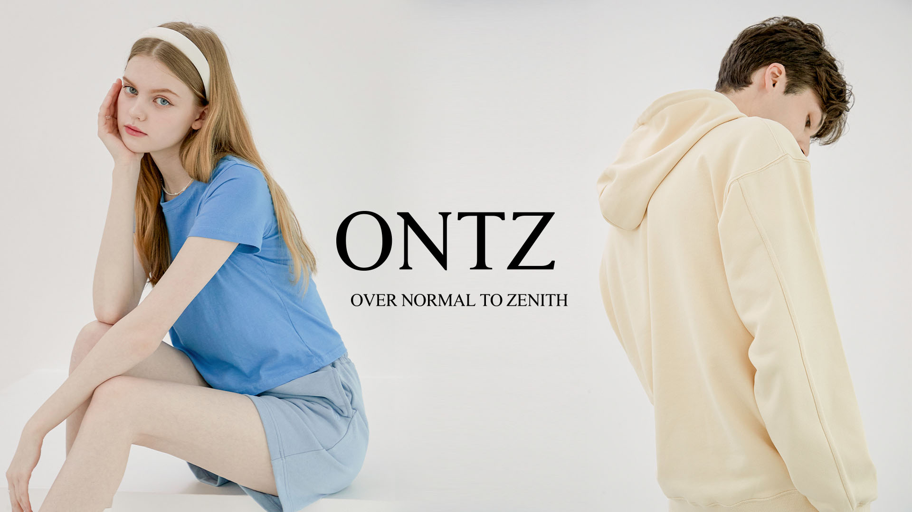
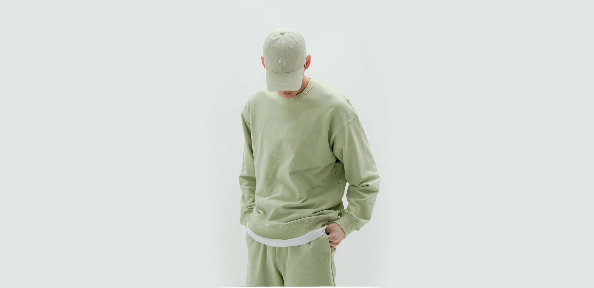
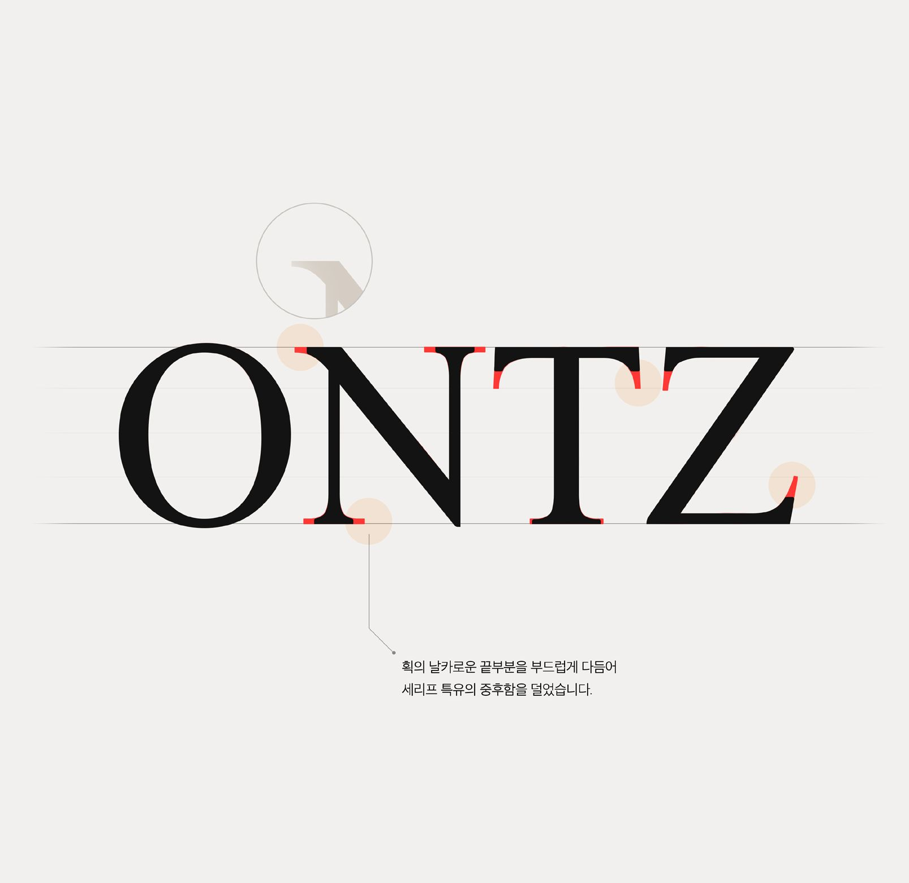
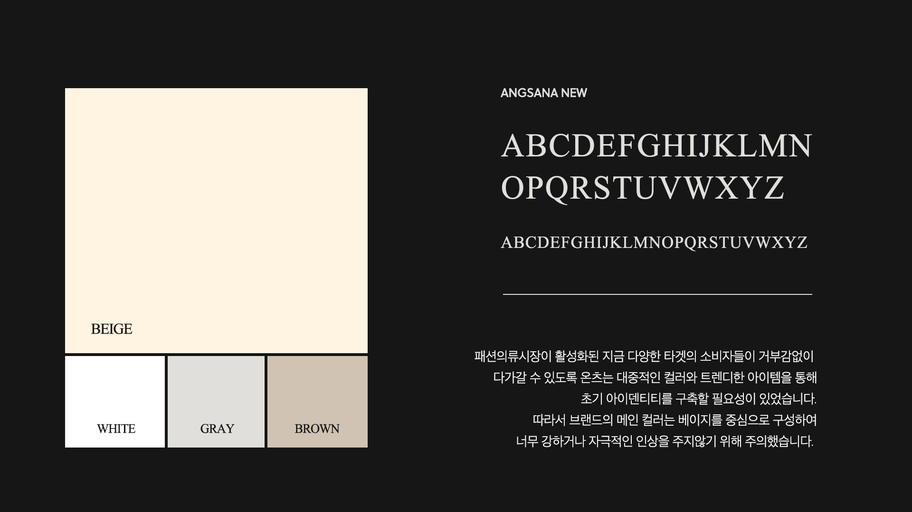
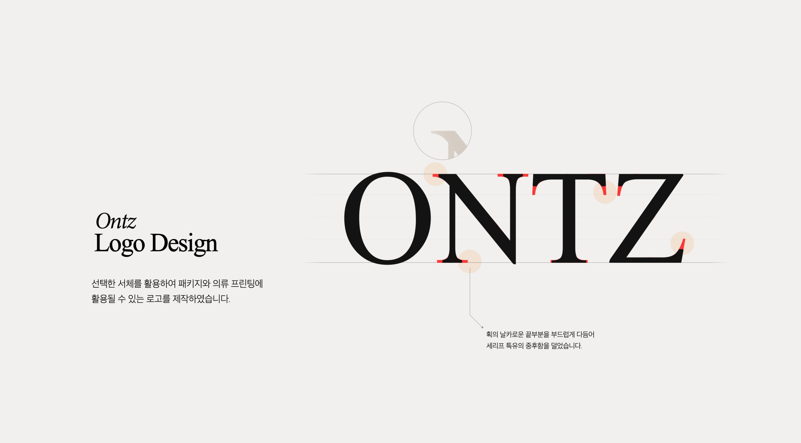

Branding
ONTZ
2022
온츠는 남녀가 편안하게 착용할 수 있는 유니섹스 브랜드로 2019년 런칭하였다. ‘over normal to zenith’라는 슬로건에 맞게 담백하고 기본적인 퀄리티를 추구하는 브랜드의 이미지를 표현하는 브랜드 아이덴티티를 정립했다. 심볼로고는 O와 n이 겹쳐진 모노그램으로 웹과 의류 등 다양한 매체에 적용된다.
ONTZ is a unisex clothing brand launched in 2019. Following its slogan ‘over normal to zenith’, the identity expresses a brand that pursues plain, basic quality. The symbol is a monogram of an overlapping O and n, applied across the web, garments and other media.
- Category
- Branding
- Duration
- 12개월 / 12 months
- Company
- Pointnine
- Visual Director
- Jaewook Kim
- ROLE
- Graphic designer




